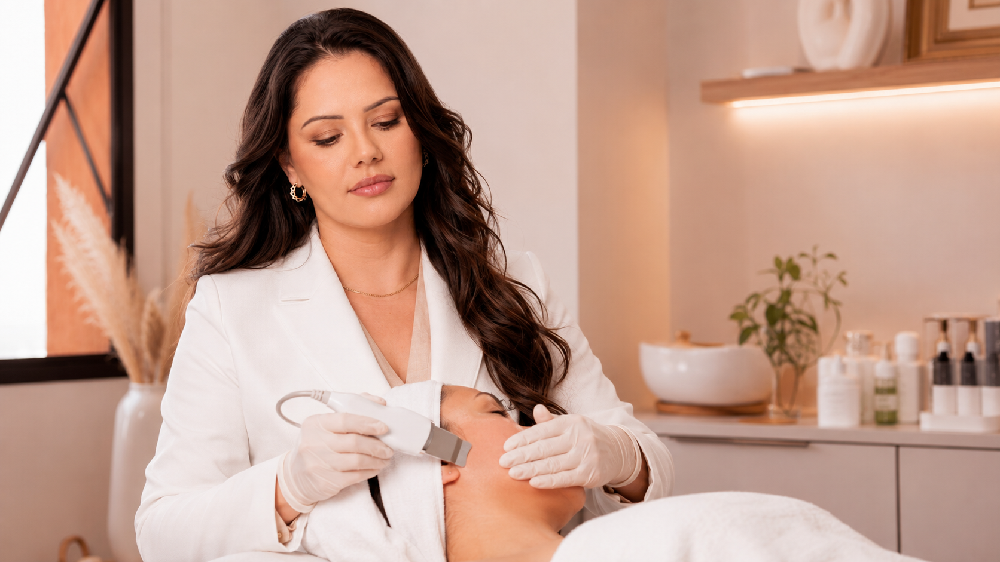

JournalConsultation & Care
Skin Cleansing
A professional cleansing should never feel like a competition to remove as much as possible. I see it as a careful starting point: observe the skin, treat only what can be treated safely and leave it calmer than I found it.

01 · Why cleansing still matters in a treatment-led clinic
 01 · Why cleansing still matters in a treatment-led clinic
01 · Why cleansing still matters in a treatment-led clinicWhy cleansing still matters in a treatment-led clinic
Professional cleansing can look simple beside lasers and other advanced technologies, but simple does not mean unimportant. For congested or unsettled skin, a careful cleansing appointment can give us a clearer view of what is happening and what should come next.
The purpose is not to make the skin feel aggressively “scrubbed clean”. Healthy skin is not sterile, and its surface barrier should not be stripped. A well-planned cleansing session aims to remove what can be removed safely, reduce avoidable obstruction and leave the skin more comfortable rather than more reactive.
02 · Congestion is not one single problem
Congestion is not one single problem
Blackheads, closed comedones, inflamed papules and small cysts may all be described as clogged pores, but they do not respond to the same approach. A blackhead is an open comedone in which material within the follicle is exposed to air. A closed comedone is covered by a thin layer of skin. Inflamed lesions are already part of an active inflammatory process and may be damaged by forceful manipulation.
This distinction matters because extraction is selective. The goal is not to empty every visible pore. It is to identify which lesions can be managed safely and which should be left alone or medically treated.
03 · What happens during a professional cleansing session
What happens during a professional cleansing session
A professional cleansing is usually organised in a calm, selective sequence:
- Observe and cleanse — begin with a close look at the skin and gentle surface cleansing.
- Adapt the products — choose according to oiliness, dehydration, sensitivity and recent procedures.
- Soften only where appropriate — prepare selected areas without overworking the whole face.
- Extract selectively — manage only the comedones that can be treated safely.
- Calm and protect — finish with hydration, soothing care and appropriate protection.
A professional should continually reassess the skin during the appointment. If redness increases quickly, the barrier appears fragile or extraction becomes traumatic, the plan should become more conservative.
04 · Why I do not believe deeper always means better
Why I do not believe deeper always means better
The word deep can create the expectation that stronger pressure produces a better result. In practice, excessive pressure can injure the follicle wall and surrounding tissue. This may intensify redness, create scabs, increase post-inflammatory pigmentation and prolong recovery.
I do not measure a successful cleansing by how much was extracted or how red the skin became. I measure it by whether the skin was respected, whether congestion was managed safely and whether the next step is now clearer.
05 · Why pores do not permanently open and close
Why pores do not permanently open and close
Pores are normal follicular openings. Their visibility is influenced by oil production, accumulated material, skin texture, sun-related changes and genetics. Warmth may soften surface material and make extraction easier, but it does not literally open a pore like a door. Cold products may temporarily change the way the skin looks or feels, but they do not permanently close pores.
The most realistic goal is to keep follicles clearer, improve surrounding texture and reduce factors that make pores appear more prominent.
“The aim of professional cleansing is not to remove everything visible. It is to remove only what can be managed safely and leave the skin calmer than it was found.”
06 · Cleansing and acne are not the same treatment
Cleansing and acne are not the same treatment
A professional cleansing session may help with selected comedones, but recurrent acne usually requires a broader strategy. Active acne can involve follicular obstruction, oil production, inflammation, bacteria, hormones and individual susceptibility. Skincare, prescription treatment and lifestyle or hormonal investigation may be relevant depending on severity.
Painful nodules, widespread inflammation, sudden adult-onset acne or acne that is leaving scars should be assessed by a dermatologist. Delaying medical care while relying only on extractions can allow scarring to progress.
07 · How often should professional cleansing be performed?
How often should professional cleansing be performed?
There is no universal calendar. Someone with significant comedonal congestion may initially need closer follow-up, while another person may only benefit occasionally. Frequency should respond to the skin rather than to a fixed monthly rule.
Home care is equally important. A gentle cleanser, suitable moisturiser, daily sun protection and targeted products recommended for the person’s skin often do more for long-term stability than frequent aggressive sessions.
08 · Aftercare: the quiet part of the result
Aftercare: the quiet part of the result
Immediately after extraction, the skin may be pink or tender. Touching, picking, friction, intense heat, heavy makeup and unplanned active products can increase irritation. The safest aftercare is usually simple: gentle cleansing, soothing hydration and reliable sun protection, following the instructions given for the session.
The days after treatment also provide useful information. If congestion returns rapidly, the next step may be reviewing products, haircare, makeup, hormones or active acne rather than repeating extraction alone.
09 · A useful beginning, not a promise of perfection
A useful beginning, not a promise of perfection
Professional cleansing can offer visible freshness and a clearer surface, but its greatest value may be diagnostic and preparatory. It reveals how the skin responds, identifies patterns of congestion and creates a better foundation for a realistic care plan.
When it is done well, cleansing respects the skin. It should not feel as though the face has been scrubbed, squeezed or punished in the name of being “perfectly clean”.
Contact
Ask about this article or another concern
Send a question with only the details you feel comfortable sharing. We will reply using the contact details you provide.
Next step
Let’s talk about skin cleansing with care
Practical guidance
Questions patients often ask
General information supports understanding, but personal suitability and safety still depend on individual assessment.
01Is deep skin cleansing suitable for sensitive skin?
It may be, but the products, extraction and duration must be adapted. Some highly reactive skin is better served by a calming session without extensive extraction.
02Will cleansing remove every blackhead?
No. Some lesions are not ready for safe extraction, and trying to remove all of them can cause unnecessary trauma.
03Does professional cleansing cure acne?
No. It can support care for selected comedones, but inflammatory, hormonal or scarring acne usually needs a broader plan and may require dermatological treatment.
04How long will redness last?
Mild redness may settle within hours, but extracted areas can remain visible for longer. Recovery varies with skin sensitivity and the amount of extraction performed.
05Can I wear makeup afterwards?
It is often preferable to keep the skin clean and avoid makeup for the period recommended after the session, especially over freshly extracted areas.
06Can I exercise after cleansing?
Heavy exercise, heat and sweating may irritate recently treated skin. Follow the specific aftercare advice given for your session.
07Will cleansing make my pores smaller?
It can make congested pores look less noticeable, but pore size is also influenced by genetics, oil production, skin structure and sun damage.
08Can I extract blackheads at home?
Repeated squeezing can damage the skin and increase inflammation or pigmentation. Persistent congestion is better assessed professionally.
09How often should I schedule a session?
Frequency should be individualised. It depends on congestion, sensitivity, home care, acne activity and how the skin responds.
10When should I see a dermatologist instead?
Seek medical assessment for painful or cystic acne, widespread inflammation, sudden changes, scarring, infection or acne that is not responding to appropriate care.

ABOUT THE AUTHOR
Franciele Sofiati
Healthy confidence can grow from care that feels gentle, measured and right for you.
Care, in context
Bring the information into your context.
Give your skin a considered starting point. Personalised consultations are available in Londrina.
An assessment can consider your history, preparation, recovery and alternatives. Reading an article does not confirm that a procedure is suitable for you.
Continue reading